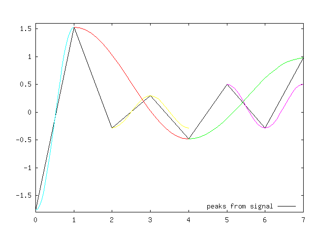
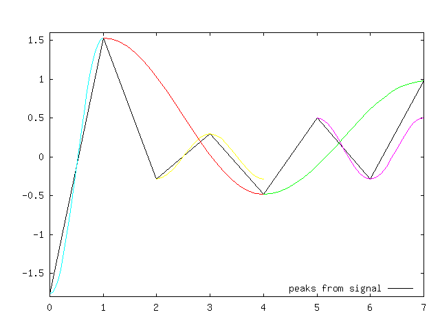

Observe that the stress range, the double amplitude, is usually applied in SN-curves when calculating the fatigue damage by the Miner-Palmgren method. You should normally do: range = 2*amplitude
The algorithm used is the "range pair-range" algorithm as described in ASTM E 1049-85 and by de Jonge (1982). The result from the "range pair-range" algorithm is exactly similar to that of the pagoda-roof "rainflow" algorithm as described by Matsuiski, M. and Endo, T. (1969). However, their descriptions are very different and the "range pair-range" algorithm is very much simpler to program.
The following figures show an example rainflow matrix and stress cycles extracted from a series of turning points.
 

$ cd ./rainflow-octave
$ make
$ ls ./src/rainflow.mex
rainflow.mex
$ make test
$ octave
octave> path
Octave's search path contain the following directories:The auxilliary demonstration scripts are fully unmodified and have not been tested extensively. The script rfdemo1.m is suspected to contain a Matlab specific command associated with a button. The GNU Octave version 3.0.0 has been applied.
Enjoy!
Torfinn Ottesen
The below text was written by Adam Nies這ny before the GNU Octave packaging. It is kept unmodified for reference purpose. For usage instructions, see the below Quick start.
Version date: 12.01.2005
Here you can find the rain flow algorithm for cycle counting, adapted for work in the MATLAB® environment. It has been translated from Turbo Pascal into C language and compiled to the MEX function. The algorithm code has been prepared according to the ASTM standard [1] and optimized considering the calculation time. The function was tested with use of PC computers in the MS Windows® operating system.
Please send all your remarks, suggestions and questions to the author.
E-mail: Adam Nies這ny
The MEX function of the rain flow algorithm has been elaborated by Adam Nies這ny. At present he is a postgraduate student of Technical University of Opole and he works on his Doctor's thesis in Department of Mechanics and Machine Design.
See the following pages:
Technical University of Opole
Katedra MiPKM
Toolbox files:
rainflow.m - short description of the rainflow function, rainflow.c - C MEX code of the rainflow function, rainflow.dll - compiled "rainflow.c" file (MATLAB 6.5, Windows 2000 Prof.), rfhist.m - histograms of rainflow data, rfmatrix.m - rainflow matrix calculation and visualization, rfdemo1.m - demo for cycle counting, recomended for short signals, rfdemo2.m - demo for rainflow matrix and histograms, recomended for long signals, sig2ext.m - auxiliary function for rfdemo, it searches turning points from signals.
In order to instal the rainflow function, you must realise standard tasks, necessary during addition of new toolboxes to the MATLAB, i.e.
Using demos:
clear all rfdemo1 rfdemo2
Rainflow counting on self generated (or loaded) signal:
clear all lengths=10000; s=10*randn(lengths,1)+rand(lengths,1); % or load the signal from file --> s=my_signal; tp=sig2ext(s); rf=rainflow(tp); rfm=rfmatrix(rf,20,20); surf(rfm)
| [1] | ASTM E 1049-85 (Reapproved 1997), Standard practices for cycle counting in fatigue analysis, in: Annual Book of ASTM Standards, Vol. 03.01, Philadelphia 1999, pp. 710-718 |
end of page
© by Adam Nies這ny